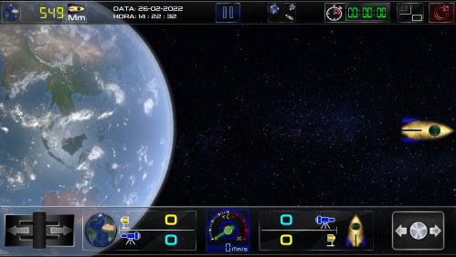

Sessão de Simulação
SIMULTANEIDADE
Esse é um experimento mental proposto por Einstein, onde ocorrem dois eventos simultâneos e equidistantes em relação a dois referenciais de observação, sendo que um está em repouso e outro em movimento.
Para saber o resultado, faça os testes no simulador e tire suas conclusões.
Baixar simulador Windows ➯ AQUI
Simular no navegador

Mais informações sobre experimento
Viagem
Com esse simulador: Podemos testar o paradoxo dos gêmeos, observar a viagem no tempo com passado, presente e futuro. Comportamento e transmissão da informação no espaço através da luz e diversas outras funcionalidades.
Baixar simulador Windows ➯ AQUI
Simular no navegador
